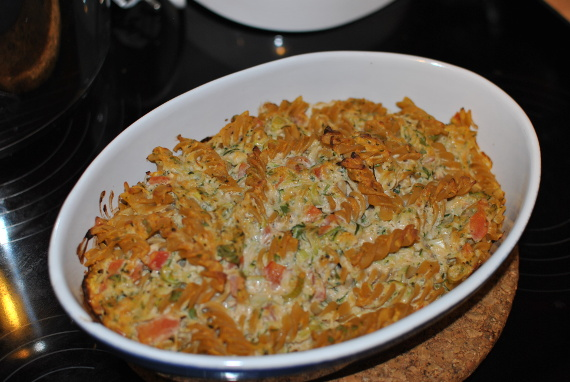

Nudelauflauf mit Zucchini

- Für 2 Personen
- Zubereitung: ca. 30 Minuten
- Backen: ca. 30 Minuten
Zutaten
- 150 g kurze Nudeln (z.B. Fusili)
- 250 g junge Zucchini
- 1 Tomate (ca. 100 g)
- 1 Bund Rucola
- 2 Frühlingszwiebeln
- 2 Knoblauchzehen
- 1/2 Bio-Zitrone
- 125 g Ricotta
- 50 g Parmesan (frisch gerieben)
- 1 TL Tomatenmark
- 1 Eigelb (Größe M)
- Chilipulver
- 1 EL Pinienkerne
- 1/2 EL kalte Butter
Zubereitung
- Für die Nudeln Wasser zum Kochen bringen und salzen. Die Nudeln darin nach Packungsangabe al dente kochen. In einem Sieb kalt abschrecken und abtropfen lassen.
- Während die Nudeln kochen, die Zucchini waschen, putzen und fein raspeln, salzen und 10 Minuten stehen lassen. Die Tomate häuten oder waschen und fein schneiden. Welke Blätter und dicke Stiele vom Rucola entfernen. Rucola waschen, trocken schütteln
und fein hacken. Die Frühlingszwiebeln putzen und waschen, die weißen und hellgrünen Teile in feine Ringe schneiden. Den Knoblauch schälen und durchpressen. Die Zitronenhälfte heiß waschen, die Schale fein abreiben.
- Den Backofen auf 200° Celsius (180° Celsius Umluft) vorheizen. Den Ricotta mit dem Parmesan, Tomatenmark und Eigelb gründlich verrühren. Die Zucchini abtropfen lassen und mit Tomate, Rucola, Zwiebelringen und Knoblauch untermischen. Mit der Zitronenschale,
Salz, Pfeffer und 1 Prise Chili abschmecken.
- Die Nudeln mit der Zucchinimischung verrühren und in eine ofenfeste Form füllen. Die Pinienkerne aufstreuen, die Butter in Flöckchen daraufsetzen. Die Nudeln auf der mittleren Ofenschiene in ca. 30 Minuten knusprig backen.